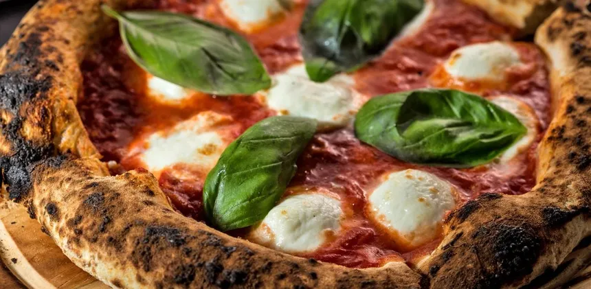
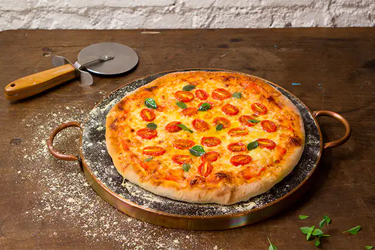
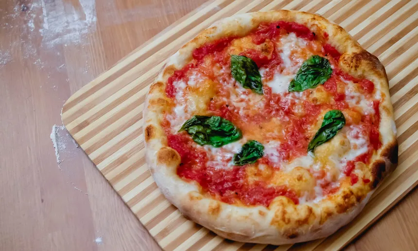
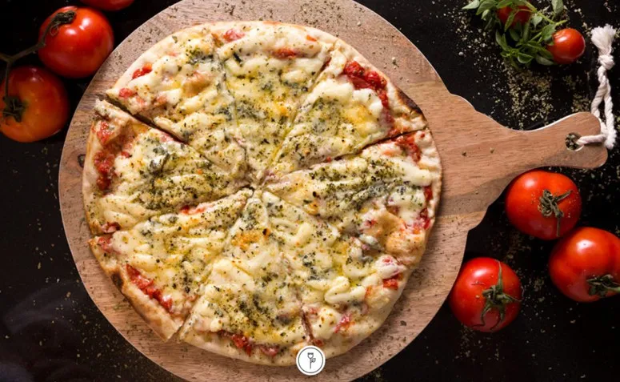

Pizzas :
1
Queijo
O recheio dessa pizza é feito com catupiry, queijo mussarela, queijo provolone, queijo parmesão fresco e queijo gorgonzola, ou seja, em vez de utilizar apenas quatro queijos, a pizza leve seis! Além disso, o molho de tomate é essencial para dar sabor e cremosidade à massa.
fazer pedido R$50,00

2
Marguerita
Molho de tomate natural temperado com azeite, sal e orégano,Queijo mussarela fatiado,Orégano e manjericão fresco.
Fazer pedido R$45,00

3
Frango com catupiry
6 xícaras de chá de farinha de trigo,2 colheres de sopa de fermento biológico seco,2 colheres de chá de açúcar,2 colheres de chá de sal,1/2 xícaras de chá de água morna,1/4 xícara de chá de azeite,Farinha de trigo para polvilhar a bancada,Azeite para untar a tigela
Fazer pedido R$455,00

4
Muçarela
6 xícaras (chá) de farinha de trigo (cerca de 840 g)
2 colheres (sopa) de fermento biológico seco instantâneo (cerca de 20 g)
2 colheres (chá) de açúcar
2 colheres (chá) de sal
2½ xícaras (chá) de água morna
¼ de xícara (chá) de azeite
farinha de trigo para polvilhar a bancada
azeite para untar a tigel
Fazer pedido R$60,00

5
Napolitana
280 g de farinha de Trigo “00″ (2 e 1/4 xíc. de chá)
180 g de água (pouco menos de ½ xíc. de chá)
6 g de sal (1 colher de chá rasa)
3g de fermento biológico fresco (1/5 do tablete de 15 g)
15 ml de azeite de oliva extravirgem (1 colher de sopa)
Fazer pedido R$40,00

6
Quatro queijo
2 xícaras (chá) de farinha de trigo
1 colher (sopa) de fermento em pó
meia colher (chá) de sal
1 xícara (chá) de água
4 colheres (sopa) de óleo
1 xícara (chá) de molho de tomate
1 unidade de queijo provolone
1 unidade de queijo gorgonzola
1 pacote de queijo muçarela ralado
1 pacote de parmesão ralado
1 colher (chá) de orégano
Fazer pedido R$62,90
